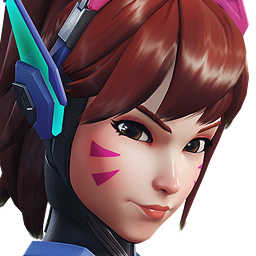
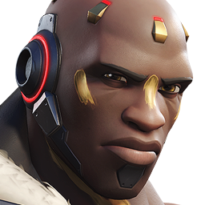
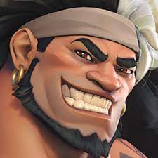
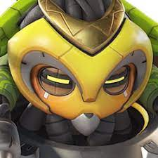
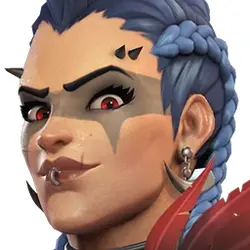
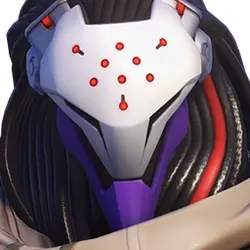
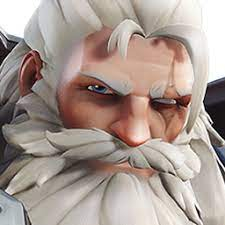

Tank
D.va
Hana Song, mais conhecida pelo artístico “D.Va”, é a número 1. Como ex-jogadora profissional, D.Va usa suas habilidades para pilotar um mecha e defender a Coreia do Sul. Ela e os outros pilotos, conhecidos como Esquadrão MEKA, são a linha de defensa entre o país e os Kishin invasores, uma ameaça mecânica das profundezas.
Há mais de vinte anos, a Coreia do Sul foi atacada por um ômnico monstruoso que surgiu das profundezas do Mar da China Oriental. O construto enorme causou danos catastróficos às cidades costeiras antes de ser forçado a recuar para debaixo das ondas. Em resposta, o governo da Coreia do Sul desenvolveu uma unidade drone blindada e mecanizada, chamada MEKA, para proteger ambientes urbanos em combates futuros com a ameaça ômnica.
Os medos do governo se mostraram fundados à medida que um padrão de ataques perturbador surgiu. A cada determinado número de anos, a monstruosidade se levantava do mar para atacar a Coreia do Sul e seus vizinhos. O ômnico aprendia com cada ataque, sempre se reconfigurando em uma forma diferente e aparecendo com novas armas e funcionalidades. Cada incidente terminava em um impasse, com a monstruosidade derrotada, porém não destruída.
Doonfist
Um lutador exímio e líder nato, Akande Ogundimu perdeu o braço direito durante a Crise Ômnica e depois se uniu à Talon. Galgando escalões, ele matou seu chefe, o Doomfist anterior, e tomou a arma e título de mesmo nome. Agora, está determinado a lançar o mundo em um novo conflito por seus próprios fins misteriosos.
Akande Ogundimu era filho de uma rica família nigeriana, dona de uma empresa de tecnologia protética. Versado em uma ampla gama de estilos de luta capazes de quebrar ossos, a carreira estelar de Ogundimu como lutador profissional foi abruptamente interrompida quando ele perdeu o braço direito durante a Crise Ômnica. E ainda que a tecnologia desenvolvida pela empresa de sua família tenha sido capaz de substituir seu braço, Ogundimu se sentia completamente perdido sem os desafios e as provações que a luta lhe proporcionava. Naquela época, ele buscou algo para se dedicar. Mas foi só quando o Doomfist atual, Akinjide Adeyemi, o convocou a se juntar ao seu grupo que Ogundimu conseguiu seguir em frente.
Mauga
Mauga Malosi nasceu para desafiar o sistema. Anteriormente membro do grupo ecoativista conhecido como os Mercenários Oceânicos, agora atua como um mercenário da Talon, espalhando o caos pelo mundo. Onde quer que esteja, ele sempre encontra uma maneira de se divertir.
Maugaloa Malosi, também conhecido como Mauga, desafia a lei desde criança. Seu pai liderava a filial samoana do grupo ecoativista, os Mercenários Oceânicos, que se tornou como uma família para Mauga. Eles o levavam em todas as suas aventuras, cultivando nele desde cedo uma dose saudável de desrespeito pela lei. Em suas missões pela Polinésia, Mauga aprendeu desde cedo que o carisma abre portas e a destruição arranca respostas. Enquanto os Mercenários Oceânicos lutavam contra aqueles que desrespeitavam a beleza de seus mares e ilhas, Mauga se tornou um guerreiro renomado.
Orisa
Construída por Efi Odale, uma menina de onze anos genial, Orisa foi criada para defender a cidade de Numbani de todas as ameaças. Quando a dupla conseguiu repelir o ataque de Doomfist, da Talon, elas se tornaram heroínas nacionais. Agora, Orisa está pronta para proteger os necessitados e usar seus poderes para o bem.
Colocada em funcionamento antes da Crise Ômnica, a linha OR14 “Idina” de robôs de segurança foi construída no enorme ômnium de produção nigeriano. Após a guerra, eles saíram de linha, juntamente com vários outros modelos usados durante a Crise. Vinte anos depois, Numbani reativou e reiniciou o programa OR14 para proteger a cidade contra ameaças externas. Esses novos OR15 foram implantados por um breve período antes de serem destruídos em um ataque de Doomfist.
Após o ataque, o programa foi desmontado e o governo vendeu o estoque restante de OR15s. Algumas peças foram adquiridas por Efi Oladele, uma garota gênio de apenas 11 anos de idade cujas precoces realizações na área de robótica já haviam lhe rendido um prestigiado "prêmio de gênio" da Fundação Adawe.
Com a aprovação de seus pais extremamente compreensivos e mente aberta, Efi gastou a maior parte do seu prêmio na compra de um robô OR15 desativado. Ela acreditava que Numbani precisava de um protetor e que um OR15 aprimorado seria capaz de fazer isso. Efi consertou e reconfigurou o robô e instalou um núcleo de personalidade que ela mesma projetou.
Chamou a mais nova heroína de Numbani de Orisa.
Rainha Junker
Antiga moradora do deserto, Odessa "Dez" governa as facções alvoroçadas de junkers há mais de uma década. Onde ela está é o seu campo de batalha, todos os assentos são seu trono e todo mundo é seu súdito, por bem ou por mal. Sua história de conquistas está só começando...
Jovem, impetuosa e confiante, Odessa “Dez” Stone nasceu em um pequeno assentamento do Deserto Australiano. Por ter mais cinco irmãos, ela cresceu tendo que lutar para se impor. Sua mãe, uma antiga líder da Frente de Liberação Australiana, comandava a guarda da cidade e seu pai, também um antigo membro da FLA, fazia negócios com outros assentamentos. Juntos, ensinaram a Dez as regras do deserto, a trabalhar em equipe e a sobreviver ao Deserto Australiano radioativo.
Para quem vive à sombra do ômnium australiano destruído, a Crise Ômnica nunca terminou de fato, só assumiu uma forma diferente. Os sobreviventes e descendentes da FLA e os ômnicos que perambulavam pelo deserto travavam confrontos, mergulhados em uma batalha sem fim por terras e recursos. Dez e seus amigos aprenderam a lutar ainda cedo e logo formaram um bando armado para caçar ômnicos do deserto. Ela usou peças e equipamentos dos inimigos que derrotou para construir armas e armadura macabras, incluindo uma manopla capaz de manipular o eletromagnetismo.
A DESFORRA
Ramattra
Ramattra não foi feito para coexistir com a humanidade. O ômnico da série Devastadora foi construído no início da Crise Ômnica como parte da classe de ômnicos de comando, cuja função era guiar unidades em combate e adaptar vários protocolos estratégicos às mudanças nas condições do campo de batalha.
Depois da Crise, Ramattra ouviu rumores de uma ômnica misteriosa chamada Aurora, a primeira do seu povo. Intrigado e em busca de orientação, ele partiu em uma peregrinação até o Monastério de Shambali no Nepal, um lugar onde se dizia que Aurora morou. Ele sobreviveu à árdua jornada e foi recebido por Tekhartha Mondatta. Depois de decidir se tornar monge shambali, Ramattra passou anos como pupilo de Mondatta, aprendendo mais sobre a Íris, o misterioso fenômeno no coração dos ensinamentos dos monges, e a importância de coexistir com a humanidade.
Anos depois, ele começou a se aventurar fora do templo, em busca de iluminação. Foi em uma de suas viagens que conheceu um ômnico chamado Zenyatta e o levou até os Shambali, esperando que ele também encontrasse propósito. No entanto, com o passar do tempo, Ramattra não conseguiu ver avanço na missão de paz dos monges. Os Shambali pediam paciência, mas, para todos os lados que olhava, ele via seu povo morrendo... e ninguém fazia nada.
Reinhardt
Reinhardt Wilhelm vive pelos nobres códigos da bravura, da justiça e da coragem. Um dos fundadores da Overwatch, por décadas foi uma força do bem pelo mundo todo. Depois da queda da organização, ele viajou pela Europa como um cavaleiro de antigamente, defendendo os inocentes ao lado de sua escudeira, Brigitte, até que Winston os chamou de volta para servir a Overwatch.
Soldado alemão altamente condecorado, Reinhardt fazia parte dos Cruzados, guerreiros veteranos que vestiam armaduras colossais com capacidades únicas. Apesar de Balderich von Adler, seu mentor, ter sido a primeira opção da Overwatch, Reinhardt foi recrutado após a morte dele na Batalha de Eichenwald. Reinhardt se tornou parte da equipe de ataque original da Overwatch, que pôs fim à Crise Ômnica. Após a resolução do conflito, Oa verwatch se tornou uma instituição global, mantenedora da paz em um mundo castigado pela guerra.
A ética incomparável e a personalidade fortíssima de Reinhardt conquistaram a admiração dos seus companheiros e superiores. Sem nunca ter medo de falar o que pensava, ele era o defensor mais vigoroso da Overwatch e, quando necessário, seu crítico mais duro, lembrando constantemente que a Overwatch havia sido criada para ser uma força do bem.
Tendo servido até quase os sessenta anos, Reinhardt teve que encarar a aposentadoria obrigatória das operações de combate. Desanimado por ter sido tirado do seu dever, Reinhardt temia que seus dias de propósito e glória houvessem terminado. Conforme os tempos ficavam mais sombrios e a Overwatch se tornava suspeita de corrupção e rebelião, ele só podia assistir enquanto a causa que havia dedicado a vida para defender era cercada de desgraça.